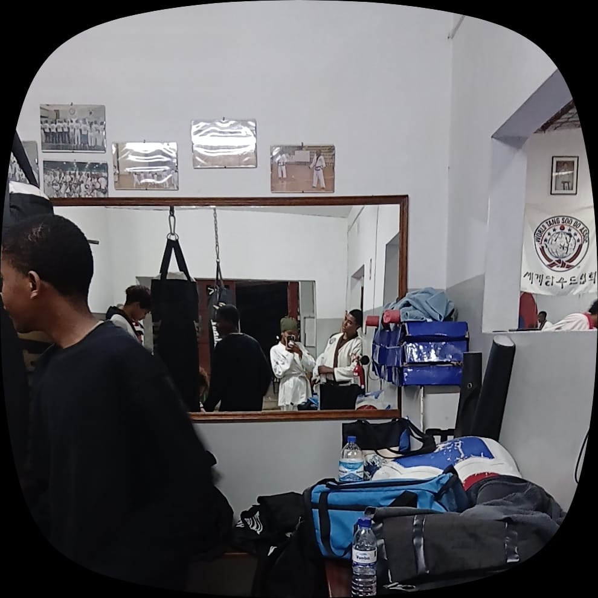

Cada música
Tem uma lembrança, uma conversa ou simplesmente aquele pensamento em você.
para
Isto aqui não é sobre um começo repentino. É sobre tudo aquilo que foi crescendo devagarinho até se tornar nisto.
desliza para ler
antes de começar
Antes de continuares a ler, abre o envelope.
Escrevi tudo isto com calma, para tentares perceber o que se passou dentro de mim desde que te conheci. Continua a descer para leres a nossa história. 💌
Nós conhecemo-nos no Tang Soo Do. No início, era só isso: nos conheciamos de vista. Eras apenas amiga de Angelo, e irma de Laerte, mas nós próprios quase não trocávamos palavra.
Não houve faísca no primeiro dia, nem "amor à primeira vista". Houve treino, houve rotina, houve os nossos encontros no dojang sem sabermos que, com o tempo, aquilo se ia transformar noutra coisa.
De conhecidos, fomo-nos tornando pessoas que conversavam todos dias.
Houve um dia em que você me mandou um TikTok de doce e beijo. No dia seguinte levei um doce para você — e você abraçou-me. Foi simples, mas eu lembro-me exactamente de como foi.
Onde tudo começou.
De trocar poucas palavras para trocar mensagens todos os dias. Sem darmos por isso, tornou-se hábito.
Um TikTok, um doce no dia seguinte, um abraço. Pequeno para quem via de fora, grande para mim.
Provocação, riso, minha forma de demostrar interesse.
raspa e descobre
Passa o dedo ou o rato por cima do cartão cinzento para descobrires o que está por baixo.
Desde o primeiro dia que reparei em ti no dojang. Nunca te disse. Até agora. ❤️
momentos guardados
Este espaço está reservado para as nossas fotos.

uma parte só nossa
Cada música que você acrescentou à minha playlist ganhou um significado especial. Se calhar para você eram só músicas, mas para mim ficaram ligadas a você e aos momentos em que a nossa história foi acontecendo.
Porque há pessoas que entram na nossa vida e, sem darmos conta, deixam até uma banda sonora.
A música que ficou a ser nossa.
Mais uma faixa da nossa banda sonora.
Tem uma lembrança, uma conversa ou simplesmente aquele pensamento em você.
Quando você acrescentava uma música, eu não via só uma faixa nova na playlist.
No fim, a nossa história também acabou por ganhar músicas que agora sempre me vão lembrar de você.
Não vim aqui te dizer que me apaixonei do nada, porque não foi assim. Foi treino atrás de treino, conversa atrás de conversa, até eu perceber que andava a te procurar com o olhar sem notar que estava a fazer isso.
Você tornou-se alguém que eu quero por perto não só na hora do treino, mas também nos dias normais. E já me cansei de guardar isto só para mim.
e depois de tudo isto...
Tásia queres escrever o próximo capítulo comigo?
Se a resposta for sim, eu vou estar do outro lado desta mensagem. ❤️
Então vamos treinar juntos com mais um motivo agora.
Sem problema nenhum. Não precisas de responder já — só queria que soubesses.